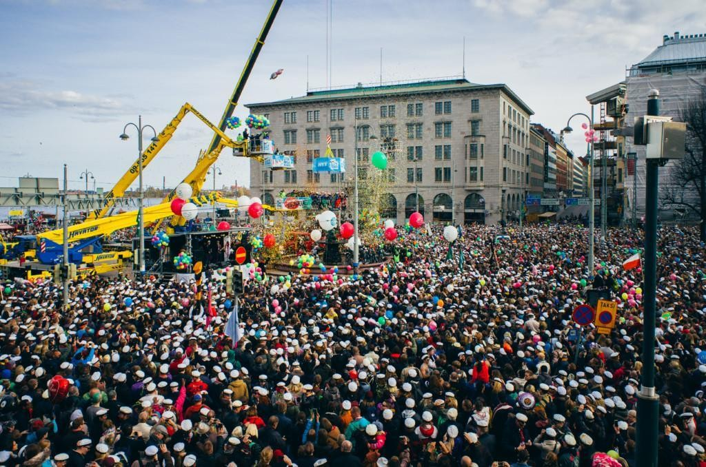
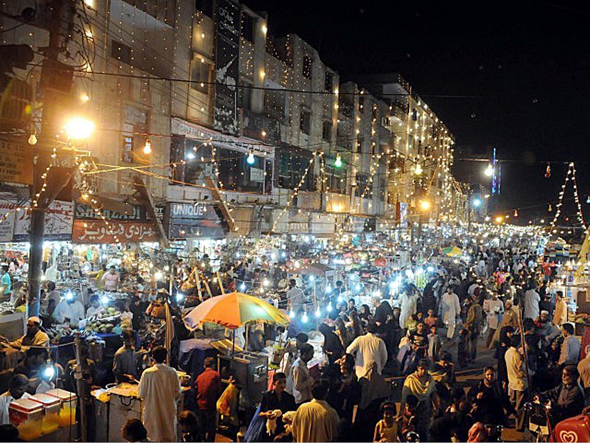
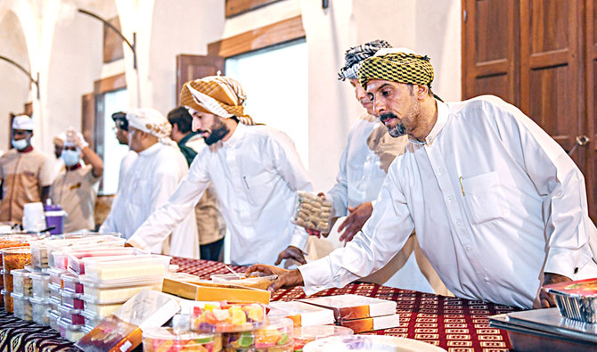

Festivals
As we have travelled all over the world so we have observed and experienced some different festivals in various regions of the world. The celebration of festivals is a vibrant tapestry woven with colors of tradition, community, and joy. These cherished occasions bring people together, transcending differences and fostering a sense of unity and belonging.
Vappu
Vappu, also known as May Day or Walpurgis Night, is a traditional Finnish and Swedish holiday celebrated on the 30th of April and the 1st of May. It marks the arrival of spring and is a time for joyous festivities and community gatherings. In Finland, Vappu is characterized by lively street parties, picnics in parks, and the donning of white graduation caps by students. Parks and public squares are filled with families and friends enjoying outdoor activities and traditional foods like munkki (donuts) and sima (a sweet, homemade lemonade). Vappu is not only a time for celebration but also a day of relaxation and leisure. Many businesses and schools are closed, allowing people to unwind and spend quality time with loved ones. Overall, Vappu is a joyous celebration that brings communities together to embrace the beauty of spring and create cherished memories that last a lifetime.
Chaand Raat
Chaand Raat, which translates to "Night of the Moon," is a vibrant and joyous celebration observed in various South Asian countries, including Pakistan, India, and Bangladesh. It occurs on the eve of Eid al-Fitr, marking the end of the Islamic holy month of Ramadan. During Chaand Raat, communities come alive with excitement and anticipation as people prepare to celebrate the festival of Eid. Markets and bazaars bustle with activity as individuals shop for new clothes, accessories, and gifts. As the crescent moon is spotted in the night sky, people offer prayers of thanksgiving and exchange warm greetings of "Eid Mubarak" (Blessed Eid) with friends, family, and neighbors. It is a time of togetherness, reflection, and gratitude as communities come together to mark the end of Ramadan and the beginning of Eid with love, laughter, and shared blessings. Chaand Raat serves as a beautiful reminder of the importance of faith, family, and community in the celebration of religious festivals.
Eid-al-Fitr
Eid-al-Fitr, also known as the Festival of Breaking the Fast, is one of the most significant religious festivals celebrated by Muslims worldwide. It marks the end of Ramadan, the holy month of fasting, prayer, and reflection. Eid-al-Fitr begins with the sighting of the new moon, signaling the end of Ramadan and the beginning of Shawwal, the tenth month of the Islamic lunar calendar. On this auspicious day, Muslims gather for special prayers known as Salat al-Eid, held in mosques or open spaces, where they seek forgiveness, peace, and blessings from Allah. Eid-al-Fitr embodies the values of compassion, gratitude, and unity, bringing communities together in celebration of faith, family, and the blessings of Allah. It is a time of reflection on the spiritual journey of Ramadan and a joyous expression of devotion, love, and hope for the future.